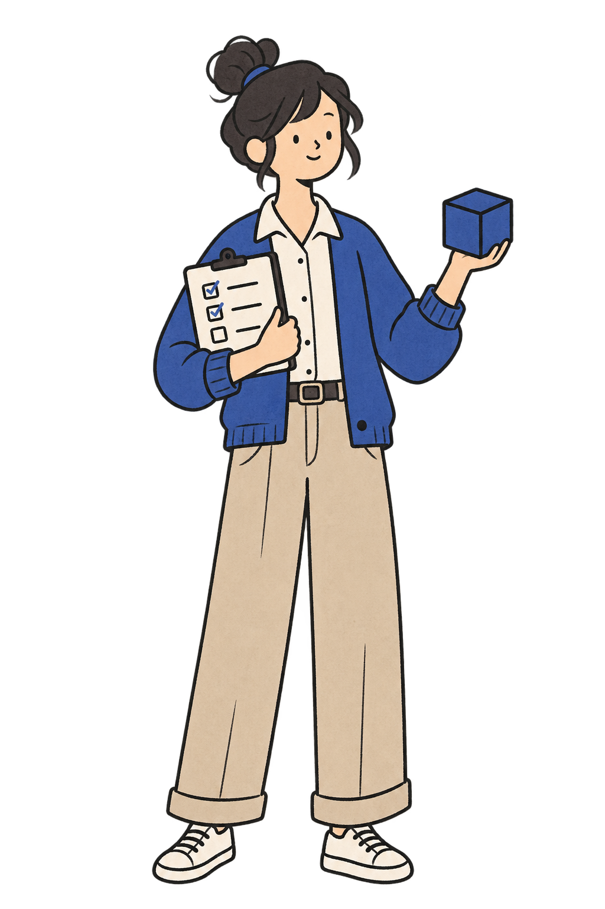
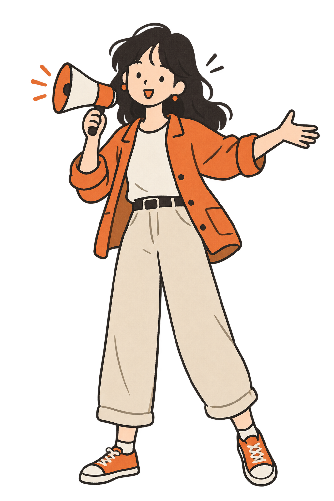
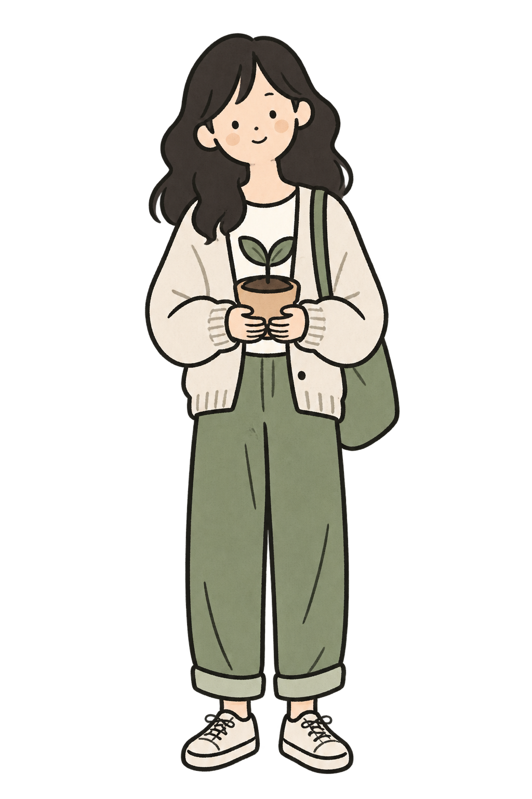
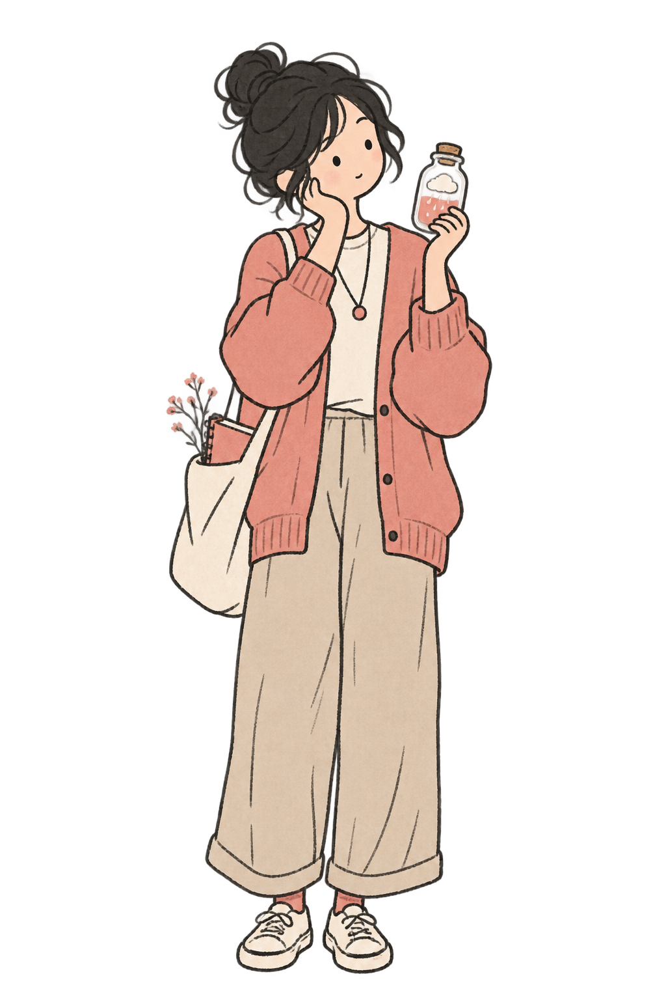

正在準備第一個問題…
不必組織成標準答案 · Ctrl + Enter 提交
這裡沒有標準答案。我們會從你的真實選擇、條件與例外中，逐步理解你如何感受、思考和行動。每天開放 10 個新訪談名額。
基於 Big Five / Five-Factor Model 的半結構化開放式訪談；不是標準化量表或臨床診斷。
每一位代表人格的一条连续维度。高低没有好坏，真正重要的是它在什么情境下发挥功能、又在什么时候带来代价。




請現在保存。以後換設備、清理瀏覽器或回來查看報告時，都使用這個碼。
倾向区间只用于本次访谈内部解释，不是常模百分位；角色称号也不是固定人格类型。
每一維都是連續區間。我们同时呈现支持证据、反向证据和适用条件。